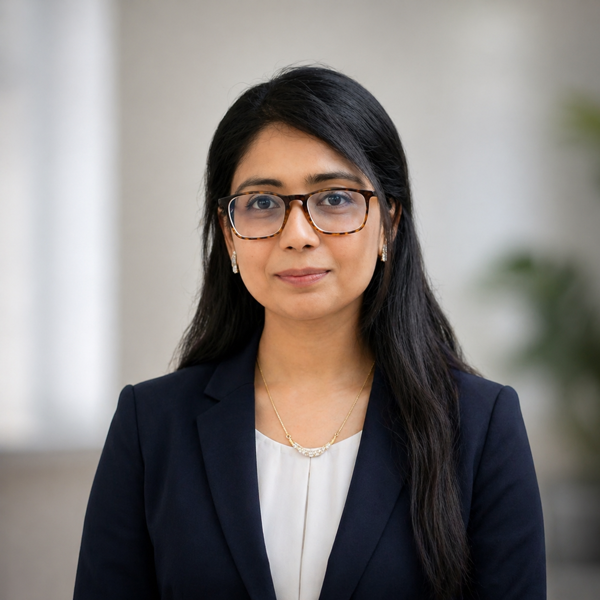

Nushrat Jahan Oyshi
Lecturer | Researcher
BSc in Computer Science and Engineering
Rajshahi University of Engineering & Technology
Bangladesh
About Me
I am a Lecturer in the Department of Computer Science and Engineering at Daffodil International University,Bangladesh. I completed my Bachelor of Science in Computer Science and Engineering from Rajshahi University of Engineering and Technology, Bangladesh. My research interests focus on deep learning, efficient neural networks, medical image analysis, and reliable AI systems.
My recent research explores knowledge distillation, compact neural networks, learning systems under real-world data constraints, and the evaluation of reliability and interpretability of deep learning models.
Education
Bachelor of Science in Computer Science & Engineering
Rajshahi University of Engineering and Technology
September 2023
- CGPA: 3.56 / 4.00
- Last 4 Semesters (79 Credits): 3.81 / 4.00
- Class Rank: 18th / 172
- Thesis: Understanding Evolving Public Concerns on Social Media through Large-Scale Machine Learning Analysis
Research Interests
- Deep Learning for Resource-Constrained Applications
- Efficient and Compact Neural Networks
- Learning Systems for Real-world Data Constraints
- Reliable AI Systems
Current Research Projects
Negative-Weighted Knowledge Distillation with Dual-Stream Swin-ViT Transformer Model for Gastrointestinal Disease Classification with Explainable AI
Under Review
Proposed a negative-weighted knowledge distillation framework incorporating Self-Negative Knowledge Distillation (SNKD) loss and Bottleneck Attention Module for gastrointestinal disease classification.
Achieved 99% accuracy across two histopathological datasets using a lightweight 0.95M-parameter student model.
Employed Grad-CAM, Grad-CAM++, and Score-CAM to provide clinically interpretable explanations of model predictions.
Deep Learning · Transfer Learning · Knowledge Distillation · Medical Image Analysis · Explainable AI
A Systematic Evaluation of Modern Deep Learning Architectures for Alzheimer's Disease Classification
Ongoing
Developed a deep learning framework for Alzheimer's disease classification incorporating targeted augmentation, weighted sampling, and hybrid Cross-Entropy–Focal loss to address severe class imbalance.
Systematically evaluated five heterogeneous architectures including CNN, Vision Transformer, hierarchical Vision Transformer, and CNN–Transformer hybrid models under a consistent experimental pipeline.
Explored heterogeneous soft-voting ensembles, where combining models with different architectural inductive biases achieved higher image-level accuracy compared to the best individual model.
Deep Learning · Medical Image Analysis · Ensemble Learning · Vision Transformers
Calibration and Explanation Reliability in Multi-Task Deep Learning for GERD and Polyp Detection in Gastrointestinal Endoscopy
Ongoing
Developed a multi-task deep learning framework based on EfficientNetV2-B0 for abnormality screening (normal vs. abnormal) and disease-type classification (GERD vs. polyp) using the GastroEndoNet dataset.
Conducted calibration analysis using Expected Calibration Error and reliability diagrams, finding an ECE of 0.08 with notable overconfidence on false-negative polyp predictions.
The study highlights limitations of accuracy-only evaluation for clinical deployment.
Deep Learning · Medical Image Analysis · Multi-Task Learning · Model Calibration · Reliable AI
A Head-Pose Compensated Dual-Branch CNN for Robust Gaze Estimation Using Consumer-Grade Webcams
Ongoing
Developed a real-time gaze-tracking pipeline for facial landmark extraction, eye-region localization, gaze regression, and blink detection using consumer-grade webcams.
Built and augmented a custom dataset from 270 to 1,350 samples under varying head poses and illumination conditions. Designed a dual-branch CNN combining eye-region and 3D head-pose features and achieved a validation MAE of 0.0516.
Ongoing work focuses on improving tracking accuracy and stability under head movement trhough enhanced calibration and jitter-reduction rechniques.
Deep Learning · Computer Vision · Human-Computer Interaction · Gaze Estimation · Real-Time Systems
Publications
2026
An Efficient Deep Learning Framework for Lung Cancer Detection: Addressing Class Imbalance with Generative Adversarial Network
Sadia Jannat Mitu, Nushrat Jahan Oyshi, Md Rashedul Alam.
2nd International Conference on Quantum Photonics, Artificial Intelligence, and Networking (IEEE QPAIN 2026)
DOI: 10.1109/QPAIN69676.2026.11546670
Published.
2023
Unveiling Altered Concern in Women-Related Tweets: A Topic Modeling Analysis
Nushrat Jahan Oyshi, Md Ali Hossain.
26th International Conference on Computer and Information Technology (IEEE ICCIT 2023)
DOI: 10.1109/ICCIT60459.2023.10441371
Published.
Work Experience
Lecturer
Daffodil International University
January 2024 – Present
- Conduct undergraduate lectures and laboratory sessions for core courses including Algorithms, Operating Systems, Computer Graphics, Computational Biology, and Digital Logic Design.
- Supervise undergraduate research projects and mentor students in developing research-oriented solutions.
Research Assistant
Bangladesh Computational Social Science Lab
November 2022 – November 2023
- Curated and preprocessed time-series datasets using Python for analyzing trends in large-scale social data.
- Developed data-processing pipelines for model training, validation, and performance evaluation.
- Applied machine learning models to identify patterns and shifts in large-scale social datasets.
Junior Data Analyst
Grameen Bikash Foundation
July 2022 – December 2023
- Designed and developed qualitative and quantitative survey tools for structured data collection.
- Conducted exploratory data analysis using Python, Pandas, and NumPy.
- Analyzed findings and prepared analytical reports to support data-driven decision making.
Skills
Programming Languages: C/C++, Python, SQL, Bash/Shell
Libraries & Frameworks: PyTorch, TensorFlow, Keras, Scikit-learn, OpenCV, NLTK, NumPy, Pandas, Matplotlib
Computer Graphics: OpenGL, GLUT
Tools: LaTeX, Git, Linux/Ubuntu
Honors & Awards
- Merit Based Scholarship, Rajshahi University of Engineering and Technology, 2018 – 2023.
- First Runner Up, Bangladesh Mathematical Olympiad Regional, 2014.
Contact
I am interested in research opportunities and collaborations in deep learning, efficient neural networks, medical image analysis, and reliable AI.
Email: oyshi.nushratjahan@gmail.com
LinkedIn ORCID